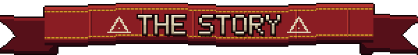
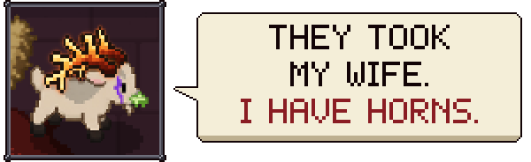
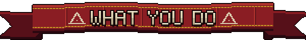
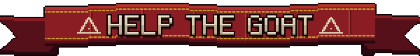

The cult took you and your wife off a meadow and threw you both in a pen. She is destined to be sacrificed. Can you challenge fate?
Break the bars and go get them!

This is my first game: a short, loud top-down roguelite with pixel art about a sacrificial goat and a compound full of meat-obsessed cultists.
💥 Headbutt cultists into walls, burn and poison them.
🐐 Get cursed powers - like poison breath or booming horns. That will transform you to UberGoat
🗡️ Use everything you can find as a weapon.
🐎🐺 Complete epic quests to get powerful allies: race the horse, sing with the husky, carry the tortoise in your teeth. Every one of them pays you back. 🐢🐖🐔🐇🐦
🍄 Eat the wrong mushroom and discover the trip.
👼 Die, go to goat heaven, and come back stronger.
✨ Sacrifice the bad guys who wanted to sacrifice you.
🎮 Inspired by: Ape Out · Nuclear Throne · Enter the Gungeon · Hades · Cult of the Lamb · My Friend Pedro · Hotline Miami, and many more

⚠️ THE GAME IS IN AN EARLY STAGE OF DEVELOPMENT. I'M LOOKING FOR PLAYTESTERS AND FEEDBACK. EVERY BUG, EVERY COMPLAINT AND EVERY "THAT WAS COOL" HELPS. ⚠️
A few questions that would really help me:
1. Roughly how long did you play?
2. How would you describe this game to a friend in one sentence?
3. After dying, did you want to jump straight back in?
4. Where did you stop, and why?
5. What did you like?
6. What didn't you like?
7. Where was it unclear what to do?
8. Which skills or abilities did you enjoy?
Answer in the comments or on Discord, or just message me. I'll be really glad you tried it. 🐐❤️